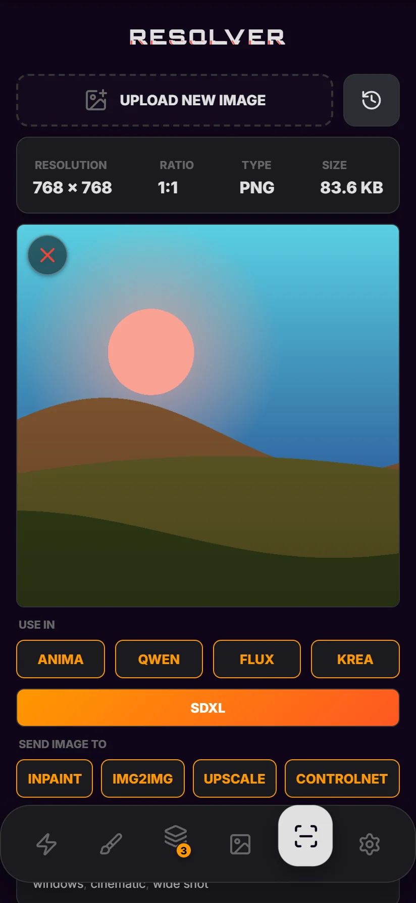

Docs / Review
Analyze
Images made with Forge carry their prompt and settings inside the file. Analyze reads them, from your own images or ones you’ve downloaded, and puts them back to work with one tap.
Opening an image
- UPLOAD IMAGE on the Analyze tab, or RECENT for images you analyzed before.
- From the viewer: Send → Analyze.
- It reads PNG files (their text chunks) and JPEG / WEBP files (the EXIF comment), the way Forge and Automatic1111 save them. Images without settings in them still show their size and can be sent on.
What it shows
- Resolution · Ratio · Type · Size
- The picture’s size in pixels, its shape (e.g. 3:4), file type and file size.
- Use In
- Copies the prompt and negative and its settings (steps, CFG, sampler, schedule, width, height, seed) into a model tab, and opens it. Only your visible tabs are offered. A sampler or schedule your Forge doesn’t have is left out, and the message says so.
- Send image to
- The picture itself to INPAINT, IMG2IMG, UPSCALE, or CONTROLNET (when ControlNet is on).
- Prompt · Negative
- In colors, as the prompt boxes show them; long ones fold (Show more). copies.
- LoRAs
- Each LoRA in the prompt as a chip, marked not installed if your Forge doesn’t have it.
- Settings
- The main settings as chips; tap one to copy it. More shows the rest (model hash, Hi-Res, ADetailer, version…).

Forge Couple images
An image made with Forge Couple shows its background and each region in boxes of their own, and Use In puts them back into the regions.
The sticky bar
Scroll down to read a long prompt and a slim bar appears at the top: the thumbnail (tap to scroll back), USE IN, SEND TO and . Turn it off in Config → Inpaint & Analyze → Analyzer sticky bar.
Good to know
- Analyze reads the file on the phone; the image isn’t uploaded anywhere (only Forge’s LoRA list is asked for, to mark missing LoRAs).
- Many sites strip the settings from images when you download or share them; a file shared through a chat app often loses them too.
- To keep the settings in an upscaled image, tick Copy Metadata from Source on Upscale.
- To describe an image that has no settings, use Magic Prompt → Describe.